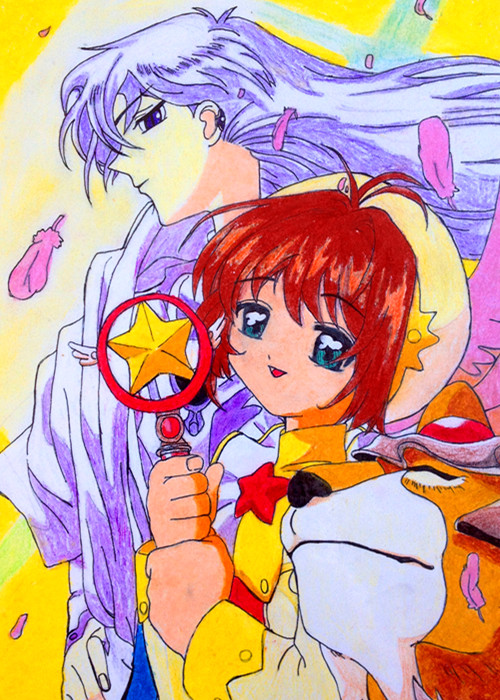
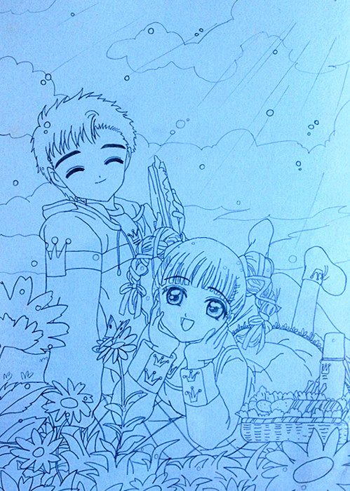
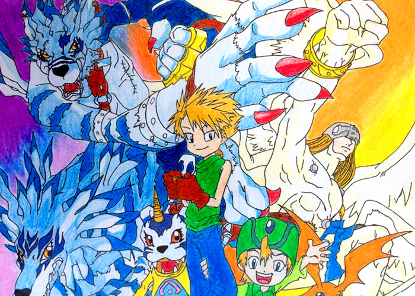
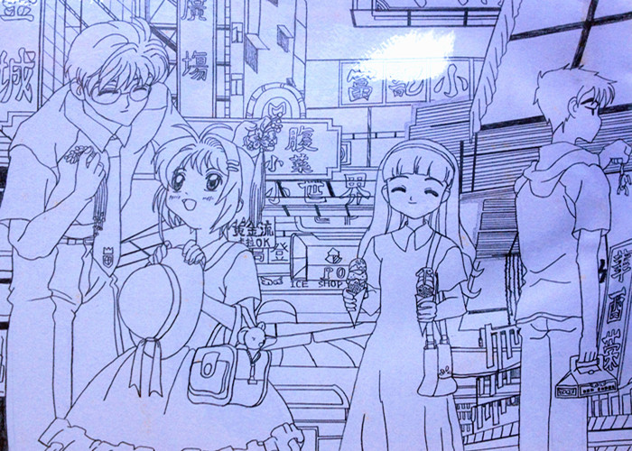
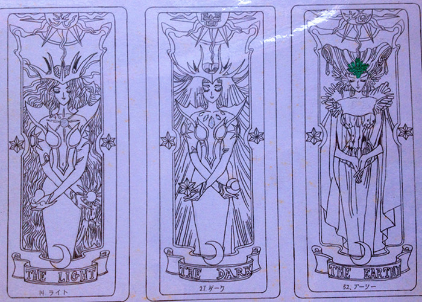

{% include base_path %}

<section class="page__content" itemprop="text">
<p class="alignlefttab">I used to draw cartoons at age 12-14 in the middle school, ending up with a cartoon album to memorize my childhood.</p>
<div style="clear: both;"></div>

<p><center>


</center>
</p>

<p><center>


</center>
</p>

<p><center>
  </center></p>

<p><center>
  </center></p>
</section>
